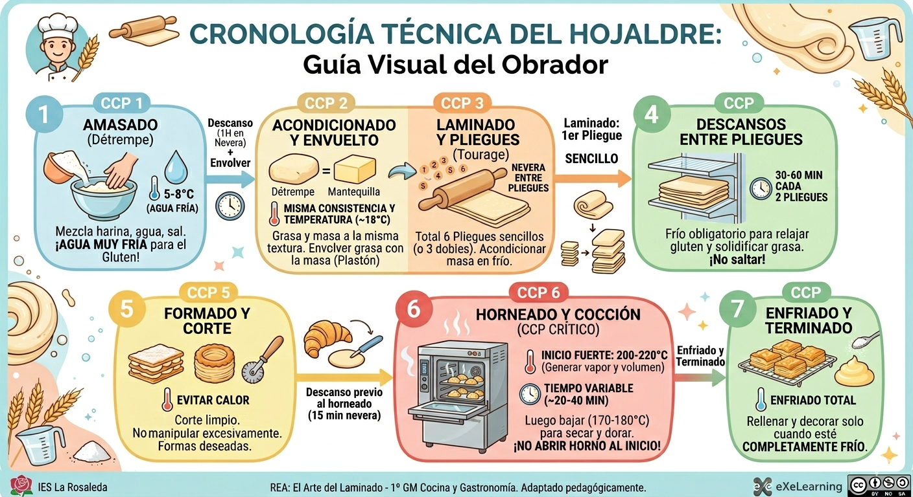

Texto
Actividad 8.1: De la Práctica a la Autoría Digital
Bienvenido/a. Hasta ahora, has estudiado la teoría sobre el hojaldre y has laminado en el taller. Es hora de convertirte en **autor de tu propio conocimiento**.
Esta actividad no es para evaluar si sabes hacer hojaldre, sino para evaluar tu **capacidad de sintetizar y documentar ese proceso técnico usando tecnología**, fusionando el rigor de la pastelería profesional con la competencia digital avanzada.
En este reto de "El Arte del Laminado" (IES La Rosaleda, 1º Cocina), vamos a fusionar la técnica de obrador con la tecnología digital.
1. Analiza el Ejemplo Técnico
A continuación, tienes una línea de tiempo visual (infografía estática) que sintetiza todo el flujo crítico de elaboración del hojaldre francés clásico.
CRONOLOGÍA TÉCNICA DEL HOJALDRE
Sintetizado: Amasado fría, descanso 1h, laminado (6 pliegues sencillos con descanso 30min c/2 pliegues), formado, horneado y enfriado.

Licencia CC BY-NC-SA 4.0
Reflexión inicial: ¿Qué elementos críticos detectas en el ejemplo? ¿Por qué es vital el control de temperatura y tiempos en cada paso? ¿Cómo podrías enriquecer esta información si pudieras embeber vídeos o audios?
2. Tu Reto: Autoría Digital de tu Proceso Técnico
Basándote en el ejemplo técnico y aplicando tu Competencia Digital, te proponemos el siguiente reto para tu Portafolio Digital.
3. Integración en Book Creator (Producto Final)
La línea de tiempo interactiva que crees no es un trabajo aislado, es una pieza clave de tu evidencia de aprendizaje profesional.
Integración en Book Creator (Producto Final): Luego, embeben esa línea de tiempo en su libro digital como evidencia de su aprendizaje.
Criterios de Éxito y Calidad Avanzada (B2):
Rigor Técnico
La línea de tiempo muestra claramente todos los pasos críticos (amasado fría, pliegues exactos, descansos, temperaturas críticas). La información está basada en tu práctica real, no es copiada del PDF.
Multimodalidad y DUA
No usas solo texto. Cada hito incluye fotos de alta calidad de tu laminado, un vídeo Time-lapse del horneado o audios explicando un punto crítico. Todo el contenido es accesible.
Higiene y Salud Digital
Las fotos en el obrador respetan los protocolos de higiene alimentaria y la seguridad de los dispositivos. La línea de tiempo embebida carga correctamente en Book Creator y no viola derechos de autor de terceros.